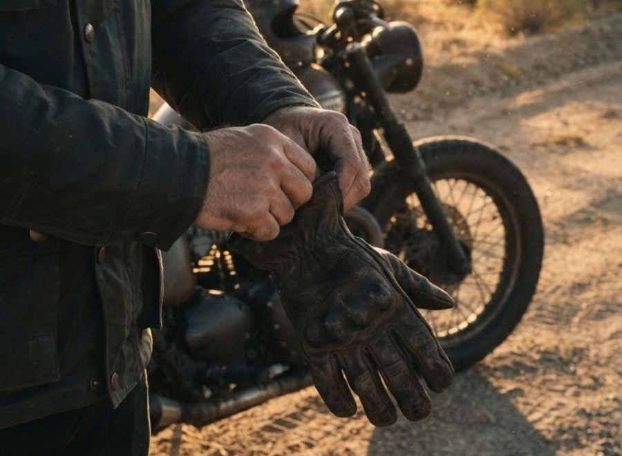
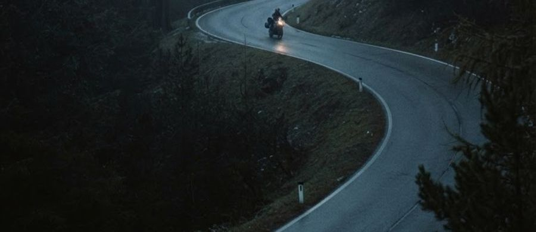
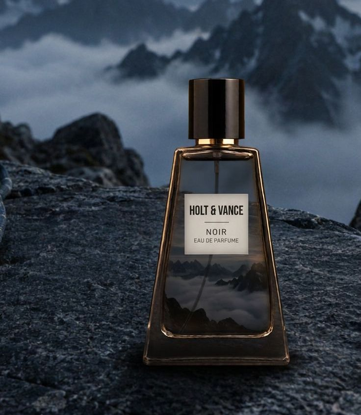
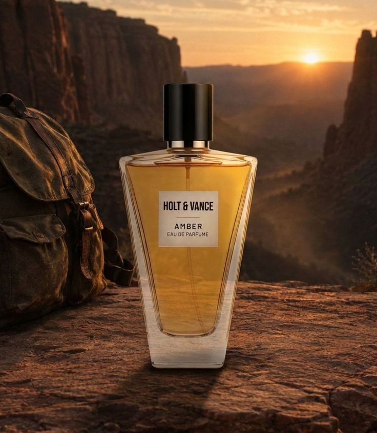

| HOLT & VANCE |
Nº 02 · Het verhaal |
|
 |
| Het verhaal |
Born on the
long way round. |
| Hoi {{voornaam}}, |
| Holt & Vance begon niet in een lab, maar onderweg. Op de motor, op een bergpas, rond een kampvuur ver van alles. Een paar avonturiers, een lege tank en een avond die langer duurde dan gepland. |
| Wat bleef hangen was niet het uitzicht, maar de geur. Nat asfalt bij het vertrek. Warm leer, stof en houtrook bij aankomst. Daar draait alles om: één geur die de hele rit blijft. |
| Waar we voor staan |
| Freedom |
Geen route, geen planning. Alleen de weg voor je en de tijd die je zelf kiest. |
|
| Adventure |
Op twee wielen, te voet of met een rugzak vol kampeerspul. Regen, stof en kou horen erbij. |
|
| Individuality |
Niet voor iedereen, en dat is de bedoeling. Je draagt het op je eigen manier. |
|
|
 |
| Twee geuren, één rit |
From cold start
to last light. |
|

00:40 · Koude start
Noir
Koel, donker en scherp. Voor de rit of tocht die begint als de rest nog slaapt.
Zwarte peper · Vetiver · Zwart leer
|

19:50 · Einde van de rit
Amber
Warm, rokerig en diep. Voor het einde van de dag, als de tent staat en het vuur brandt.
Houtrook · Tabak · Warm leer
|
|
|
|
| PS: je welkomstcode FIRSTRIDE (10%) is nog een week geldig. |
|
Built for the long road.
Geuren ·
Verhaal ·
Instagram
Je ontvangt deze mail omdat je je met {{email}} inschreef via de website van Holt & Vance en daarvoor toestemming gaf.
Uitschrijven · Voorkeuren · Privacy
Holt & Vance · Fictief merk · Schoolproject Creative Automation
|